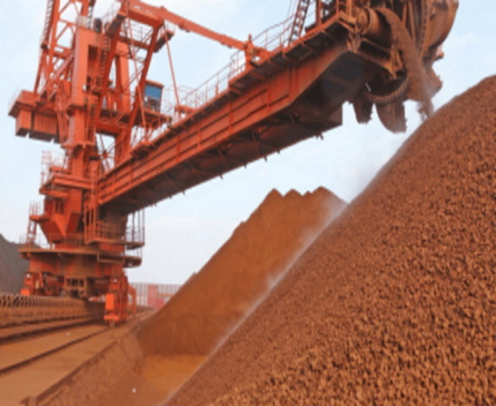

Добування заліза в Делі |
Індія має значні запаси руд заліза, алюмінію, титану, рідкісних металів, слюди. У її надрах є також родовища нафти, вугілля, руд золота, міді, свинцю і цинку, бариту, флюориту, графіту, кіаніту, гіпсу, солей, фосфатів, дорогоцінних каменів (алмазів, смарагдів, аквамаринів, сапфірів та ін.). Найпоширеніші корисні копалини Індії: кам'яне вугілля, нафта, газ і залізо; рідше зустрічається мідна руда. Найрідші — дорогоцінні камені. Залізо ІндіїКількість зал. руд в І. оцінюється в 13,3 млрд т. Руди — гематитові і магнетитові, асоціюють із залізистими кварцитами докембрію (штати Біхар і Орісса). Вміст заліза в гематитових рудах 55-62 %. Найбільші родовища — Кудремукх, Маюрбхандж, Дург, Байладіла, Гоа, Белларі-Хоспет, Бабабудан, Салем. Головні сховища високосортного гематиту станом на 2002 р зосереджені в районах Madhya Pradesh (630 млн т), Orissa (320 млн т), Karnataka (220 млн т) і Bihar (85 млн т). Середній вміст Fe 62-65 % має місце в Bihar (1 790 млн т), Orissa (1 300 млн т), Madhya Pradesh (485 млн т), Karnataka (440 млн т) і Goa (150 млн т). Металургійний кондиційний магнетит знаходиться в Karnataka (1 150 млн т), Goa (100 млн т) і Andhra Pradesh (40 млн т). Нафта і газ ІндіїВ Індії виділяють 15 нафтогазоносних басейнів. Більшість родовищ нафти і газу (понад 70) зосереджена в Камбейському нафтогазоносному басейні, розташованому на заході країни. Достовірні запаси нафти — 460 млн т., газу — понад 410 млрд м³. Скупчення нафти залягають в палеоцен-олігоценових і міоценових відкладах на глиб. 440—1800 м. Поклади багатопластові, склепінчасті, тектонічно екрановані. На суші сер. глибина свердловин 3 км, на шельфі — 2 км. Найбільш великі родовища — Бомбей-Хай з поч. розвіданими запасами нафти до 250 млн т., Панна — 70 млн т, Анклешвар — 50,4 млн т. Другий нафтогазоносний басейн І. — Ассамський — на півн.-сході країни. Продуктивні пісковики серій Бараїл (олігоцен) і Типам (ниж. міоцен) на глиб. 50-3400 м. Найбільше родов. — Нахоркатья з поч. розвіданими запасами нафти 44,3 млн т. Нафти Камбейського бас. легкі і середні (густина 790—860 кг/м³), малосірчисті. Вміст парафіну 2,4-5,7 %. Гази вільні і розчинені, жирні, вміст гомологів метану 10-55 %. У Ассамському бас. нафти середні (830—860 кг/м³) і важкі (860—920 кг/м³). Вміст сірки не перевищує 0,32 %, парафіну 2-23 % |
Вугілля ІндіїЗапаси вугілля в надрах країни оцінюються в 208 млрд т, в тому числі достовірно підраховані 70 млрд т. Доступні для експлуатації запаси вугілля оцінюють в 51 млрд т, головні поклади знаходяться в Біхарі і на заході Західної Бенгалії, що потребує транспортування вугілля в інші райони країни. Запаси коксівного вугілля оцінюються приблизно в 4 млрд т. Бл. 56 % всіх запасів кам'яного і бурого вугілля в І. зосереджено в шт. Біхар, Зах. Бенгалія і Мадхья-Прадеш. У Дамодарському вуг. бас. І. знаходяться найважливіші родов. коксівного вугілля Джхарія, Ранігандж, Сх. і Зах. Бокаро, Півн. і Півд. Каранпура та ін. В бас. р. Маханаді (шт. Орісса) розташовуються родов. енергетичного вугілля Хангір, Іб і Талчер. У бас. відомо 3-4 пласти робочої потужності, один з яких на родов. Талчер досягає 44,6 м. Характеристики вугілля: вологість 8-14 %, вміст летких речовин 20,9-36,6 %, золи 8-25 %. У долині р. Сон (шт. Мадхья-Прадеш) відомо декілька родов. в тому числі Сінграулі, з унікальним за потужністю пластом Дахінгурдак (133 м). На найбільшому буровугільному родов. Нейвелі (шт. Тамілнад) із загальними запасами 3,3 млрд т розробляється один пласт потужністю 18 м. Вугілля малозольне (3 %), вологість 50 %, вихід летких речовин 25 %, теплота згоряння 10,2-15,0 МДж/кг. Уран. Всі пром. родов. уранових руд знаходяться в Сінгбхумській зоні в метаморфізованих породах докембрію (всього 58 тис.т. в перерахунку на оксид, вміст урану 0,02-0,2 %). Найбільше родов. — Джадугуда (два рудні поклади потужністю 5-6 м і 2-3 м); 75 % урану зосереджено в уранініті, 22 % — в апатиті і мінералах групи пірохлору-мікроліту. Мідь ІндіїРодов. мідних руд розташовані в двох гол. рудних районах — Сінгхбхумському (шт. Біхар) і Кхетрі (шт. Раджастхан). Найбільші родовища — Мосабон, дві рудні зони прослідковуються на 4,8 км за простяганням і на 900 м на глибину, Мадхан-Кудхан і Коліхан. | |